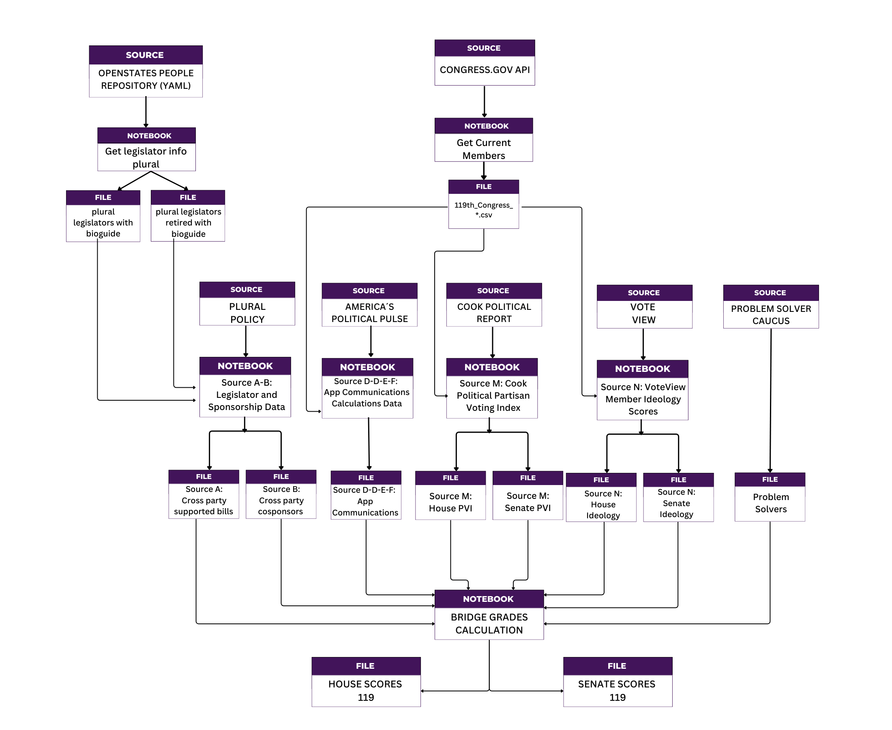

About Bridge Grades Project#
Bridge Grades Data Pipeline Overview#
Project Philosophy#
Bridge Grades is built on four core principles that guide every aspect of our methodology:
Non-ideological: Focus on behavior, not beliefs
Data-driven: Based on observable legislative actions
Transparent: Derived from public, verifiable sources
Comprehensive: Capture multiple dimensions of collaboration
These principles ensure that Bridge Grades measures how politicians behave rather than what they believe, providing objective assessments of bipartisan collaboration that transcend partisan divides.
Data Pipeline Architecture#
The Bridge Grades methodology follows a systematic data pipeline that transforms raw congressional data into meaningful collaboration grades. The pipeline consists of three main stages:
Stage 1: Data Preprocessing Notebooks
Purpose: Transform raw data sources into standardized, analysis-ready datasets Each preprocessing notebook takes one or more raw data sources and converts them into the specific metrics needed for Bridge Grade calculations. These notebooks handle data cleaning, standardization, and initial metric calculations.
Stage 2: Data Integration and Scoring
Purpose: Combine all processed datasets and calculate final Bridge Grades
The main scoring engine takes all preprocessed datasets and applies the Bridge Grades algorithm to generate final letter grades (A, B, C, F) for each member of Congress.
Stage 3: Output and Analysis
Purpose: Generate final results and provide transparency into the scoring process
Final datasets include complete scoring breakdowns, allowing users to understand exactly how each Bridge Grade was calculated.
Notebook Structure and Data Flow#

Base Data Collection Notebooks#
Current Legislators Data Collection#
Purpose: Generate master legislator roster from official sources
Input: Congress.gov API and OpenStates repository
Process: Collects current member information and bioguide_id mappings
Output: Master legislator datasets with unique identifiers
Bridge Grades Impact: Provides essential legislator identification for all subsequent processing
Preprocessing Notebooks (Data Sources A-P)#
Source A-B: Legislator and Sponsorship Data Processing#
Input: Raw bill sponsorship data from Plural Policy
Process: Identifies bills with cross-party cosponsorship and calculates collaboration metrics
Output: Two key datasets:
Source A: Authors of bills with cross-party sponsors
Source B: Legislators who cosponsor bills from the opposite party
Bridge Grades Impact: Core legislative collaboration metrics (suggested weights: A=3.0, B=2.0)
Source C-D-E-F: APP Communications Calculations#
Input: Public communication data from Americas Political Pulse
Process: Analyzes rhetoric patterns for bipartisanship and personal attacks
Output: Four communication metrics:
Source C: Bipartisan communication sum
Source D: Bipartisan communication percentage
Source E: Personal attack sum
Source F: Personal attack percentage
Bridge Grades Impact: Measures public rhetoric and communication style (suggested weights: 1.0 each)
Source M: Cook Political PVI Processing#
Input: Partisan Voting Index data from Cook Political
Process: Measures district/state partisan lean for “degree of difficulty” adjustment
Output: PVI scores for all congressional districts and states
Bridge Grades Impact: Bonus for rewarding bridging in highly partisan districts
Source N: VoteView Ideology Scores#
Input: Ideological positioning data from VoteView
Process: Calculates distance from ideological center
Output: Ideology distance scores for all members
Bridge Grades Impact: Bonus for rewarding bridging by non-centrist legislators
Source P: Problem Solvers Caucus “Bump”#
Input: Membership list of the Problem Solvers Caucus (PSC) from problemsolverscaucus.house.gov
Process: Flags each legislator by bioguide ID and applies a fixed points boost (
ps_score) to their pledge scoreOutput:
P_flag(0 or 1)Bridge Grades Impact: Bonus for rewarding participation of PSC members
Main Scoring Engine#
Bridge_Pledge_119: Final Bridge Grade Calculation#
Input: All preprocessed datasets (Sources A-P) plus attendance data
Process:
Applies attendance filtering (removes members below 20% attendance)
Integrates all data sources using bioguide_id matching
Normalizes all metrics to 0-100 scale using statistical distributions
Applies configurable weights to each source
Calculates composite scores with ideology multipliers
Assigns letter grades using statistical thresholds
Output: Complete scoring datasets for House and Senate members
Key Features:
Configurable source weights
Problem Solvers Caucus bonus
Statistical grade assignment (A/B/C/F)
Complete transparency in scoring breakdown
Key Principles in Practice#
Non-Ideological Focus
What We Measure: Legislative collaboration, bill sponsorship, communication patterns
What We Don’t Measure: Political beliefs, policy positions, voting ideology
Implementation: Sources M and N use ideology only as context multipliers, not direct scoring factors
Data-Driven Methodology
Observable Behaviors: All metrics based on concrete actions (sponsoring bills, making statements, voting)
Public Records: Every data point traceable to official congressional records
Statistical Rigor: Normalization and threshold-based grading eliminate subjective judgments
Transparency
Complete Traceability: Every score component preserved in output files
Open Data Sources: All primary data publicly accessible
Configurable Weights: All source weights can be adjusted and documented
Methodology Disclosure: Full documentation of algorithms and processes
Comprehensive Coverage
Multiple Dimensions: Legislative action, public communication, district context
Both Chambers: House and Senate processed separately with appropriate adjustments
Full Congress: All members included (subject to attendance requirements)
Balanced Metrics: Both positive (collaboration) and negative (attacks) behaviors measured
Quality Assurance and Validation#
Data Quality Checks
Attendance Filtering: Removes members with insufficient participation
Missing Data Handling: Appropriate filling strategies for each data type
Duplicate Removal: Systematic handling of duplicate records
Outlier Detection: Statistical validation of extreme values
Methodology Validation
Cross-Reference Checks: Multiple sources validate legislator identification
Statistical Consistency: Regular validation of scoring distributions
Transparency Audits: Periodic reviews of methodology and outputs
User Feedback Integration: Continuous improvement based on stakeholder input
Update and Maintenance
Regular Data Updates: Monthly to annual refresh cycles depending on source
Version Control: Complete tracking of methodology changes
Backup and Recovery: Robust data storage and processing systems
Documentation Maintenance: Continuous updates to reflect current methodology
Bridge Grades Impact#
For Voters#
Objective Assessment: Clear, data-driven evaluation of congressional collaboration
Transparent Methodology: Complete understanding of how grades are calculated
Actionable Information: Identifies “bridgers” vs “dividers” for informed voting
For Legislators#
Performance Feedback: Clear metrics on collaboration effectiveness
Incentive Alignment: Rewards bipartisan behavior regardless of ideology
Recognition System: Acknowledges Problem Solvers Caucus and other collaborative efforts
For Democracy#
Polarization Reduction: Encourages collaboration over division
Accountability: Public scoring creates pressure for bipartisan engagement
Transparency: Open methodology builds trust in the evaluation process
Evidence-Based Reform: Data-driven insights for improving congressional function